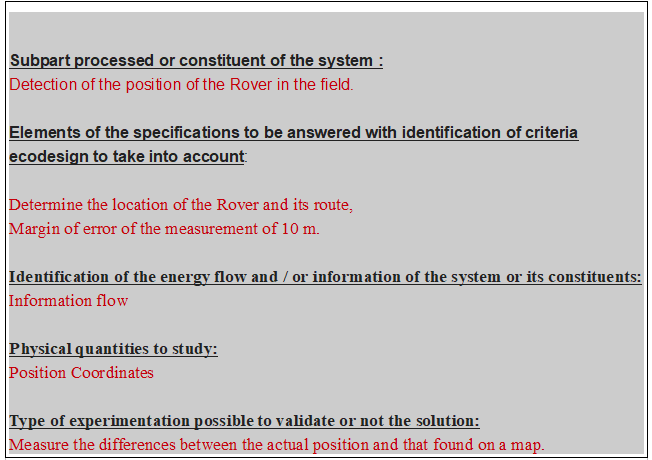
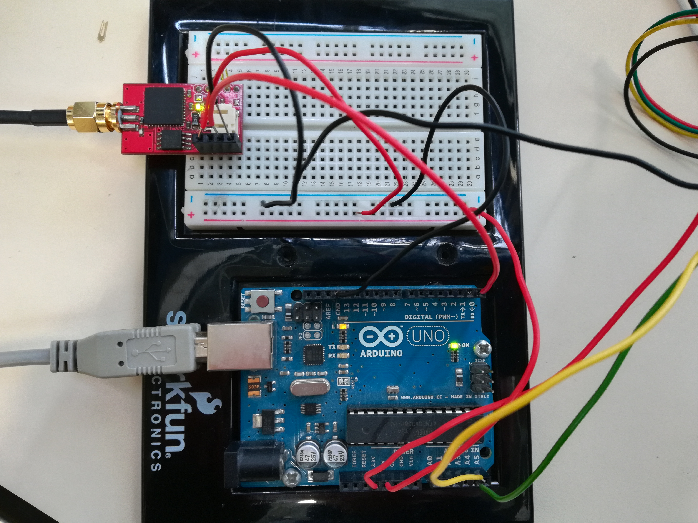
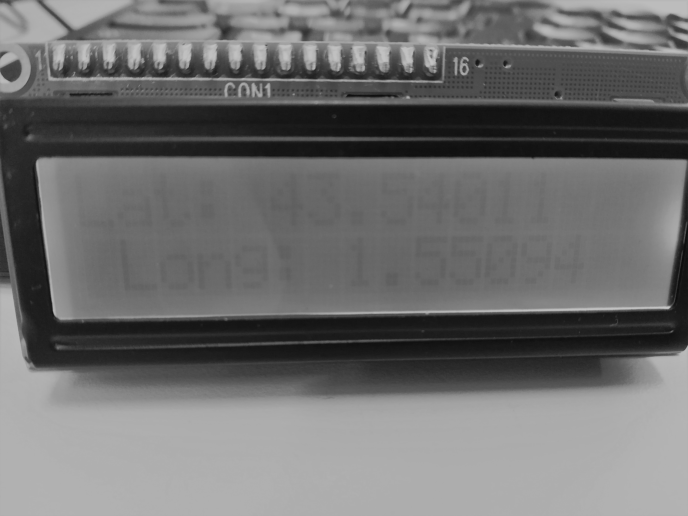

Specifications
To define a position in space, three coordinates (x, y and z) are required. GPS data also includes a fourth variable: time. It requires four satellites equipped with atomic clocks to obtain a position, and a GPS receiver that will decode and calculate the signals received. . The operating principle of the system is based on triangulation. A satellite emits an electromagnetic wave of known speed. This wave, carrying a "pseudo-random" code, is transmitted at a definite time. The receiver then calculates the transmission time, the time required for its signal to be in phase with the signal emitted by the satellite. By multiplying this time by the speed, it thus obtains the distance which separates it from the satellite. The receiver has a first information: it is on a circle centered on the satellite. By repeating this procedure with a second satellite, it can again be located on a second circle centered on the second satellite. Repeating the operation a third time and looking for the area of intersection between these three circles, we obtain the position on the Earth. The fourth satellite makes it possible to determine the time difference between the time of the GPS receiver and the exact time provided by the satellites, in order to refine the position. The higher the number of satellites captured, the better the accuracy. But for this project we will use 3 satellites. We will then transmit the information by an LCD which will then display the results obtained.
The assembly is in serial connection. We will aim to have the same longitude and latitude as in the Proteus diagram. The proteus images are in the files "project 1 and 2"

The picture is black and white because the light of LCD is low
Links "Projet 1 and 2":